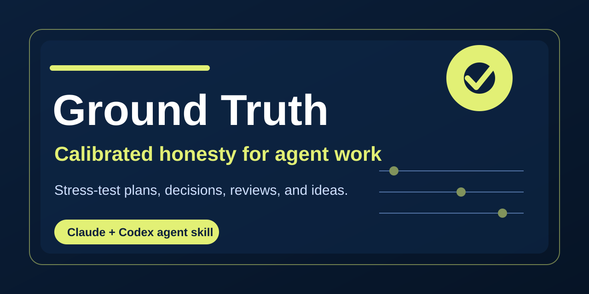

Best for
Product plans, strategic claims, reviews, writing, decision drafts, and any situation where you want honest assessment rather than agreeable reinforcement.
A critical-thinking skill for Claude and Codex that pushes back with calibrated honesty instead of easy validation.

Product plans, strategic claims, reviews, writing, decision drafts, and any situation where you want honest assessment rather than agreeable reinforcement.
Critical thinking AI skill, anti-sycophancy prompt for Codex, honest review workflow, challenge my plan AI, and calibrated critique for Claude.
Use The Briefing Room to organize context first, Ground Truth to challenge the thinking, and The Quorum when the situation becomes a consequential decision.
Ground Truth is a portable Claude and Codex skill for calibrated honesty and anti-sycophancy on plans, ideas, reviews, and decisions.
Use it when you want honest critique, stronger reasoning, and fewer agreeable but shallow responses.
Ground Truth is a direct critical-thinking partner. The Quorum is a structured multi-lens council for consequential decisions.